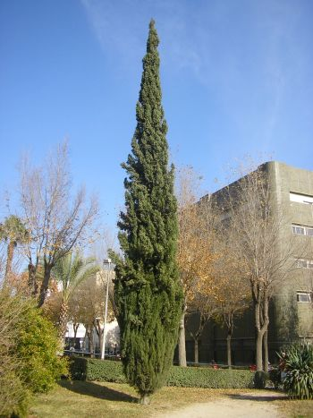
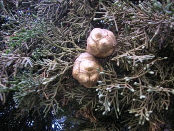

Flora ornamental del Campus
de
Reina Mercedes, Universidad de Sevilla. Ficha nº
57 - Versión
1
|
Cupressus sempervirens L., Sp. Pl. 1002 (1753)
C. horizontalis Mill.; C. patula Spadoni |
|
|
Ciprés
común,
ciprés
piramidal, ciprés italiano, ciprés de los cementerios |
Árbol
escamifolio |
|
Árbol escuamifolio, de 1-18 m,
con porte
columnar o extendido; corteza delgada de color
pardo grisáceo, con largas fisuras longitudinales que no se exfolian;
ramillas
cilíndricas, subtetrágonas, de alrededor de Conos femeninos terminales, solitarios o
en grupos, de 2-3,5 cm,o ovoides o esféricos,
de color verde, pasando a gris marrón lustroso en la madurez, formados
por
10-14 escamas, con 8-20 semillas por escama. Las piñas tardan dos años
en
madurar. |
 |
|
 |
Observaciones: Cupressus, nombre latino del
ciprés.
Según algunos autores deriva de Cyprus
(Chipre), donde es nativo y crece silvestre. Sempervirens en latín
significa "siempre verde". |
|
Área de origen.- Su área de distribución original no está bien determinada, ya que fue muy cultivado desde la antigüedad. Se le supone nativo del Mediterráneo oriental (Irán, Siria, Chipre). |
|
|
Uso en el campus: numerosos ejemplares, unos formando setos y otros como árboles o arbustos ornamentales |
Localización.- Zona
Central del Campus: Jardín Cica Sureste Facultad de Química Jardín central:
Este, Norte y Oeste Jardín del estanque Parking bicis (seto)
Jardín Central Jardín Noroeste Parking |
|
Referencias: (2)
www.infojardin.com/fichas/arboles/thuja-orientalis-arbol-de-la-vida-biota.htm |
|
|
Isabel Guerrero Molina (2006) & Carlos Romero Zarco (2007) |
|